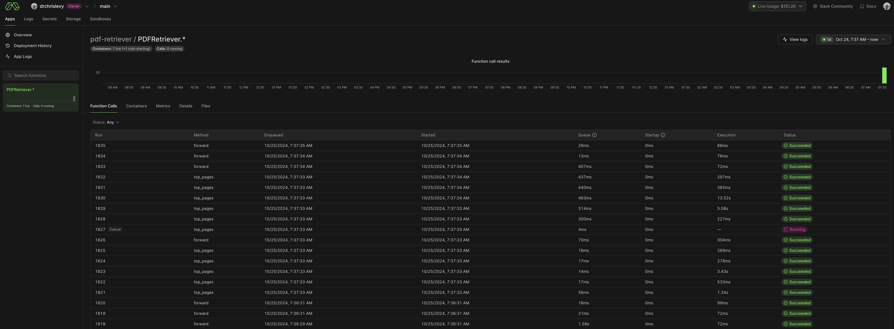
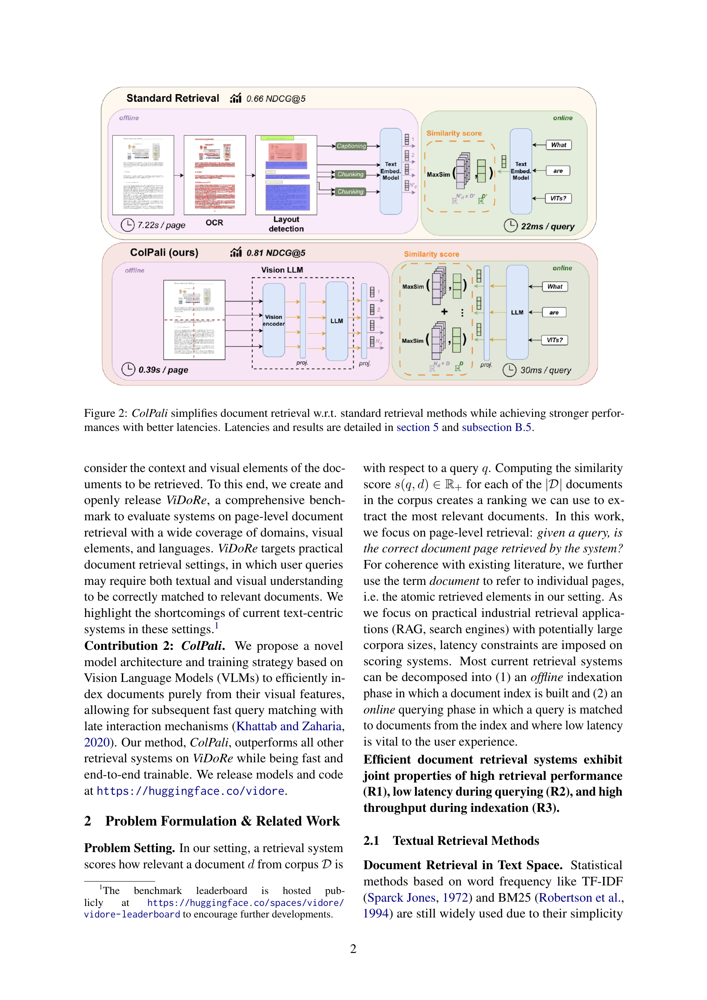
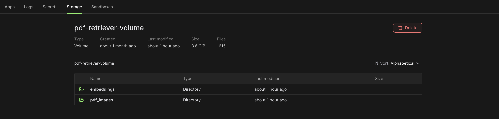
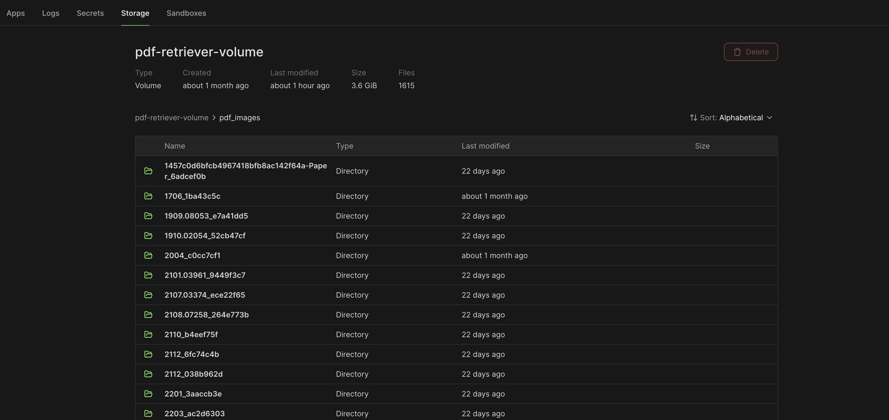
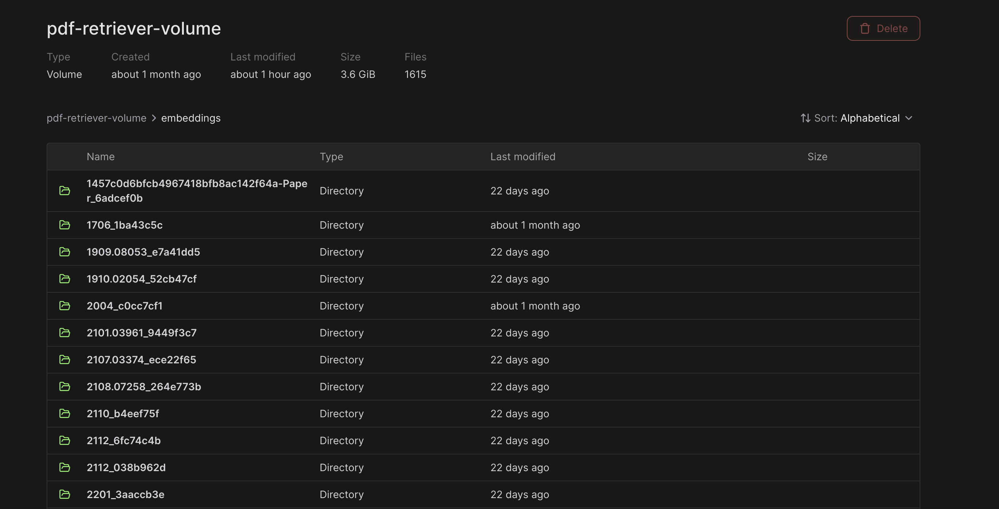
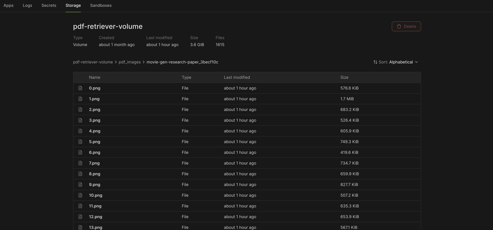
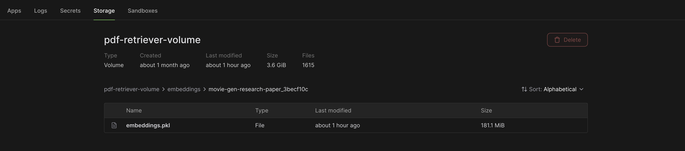

Chat with PDF App using ColPali, Modal, and FastHTML
Author
Chris Levy
Published
October 30, 2024
Modified
October 30, 2024
Intro
Lately, I’ve been following FastHTML from a distance. As someone who sticks to backend Python development, frontend development has always been a bit foreign to me, but I’m interested in giving it a shot. FastHTML feels like a good way to get started with some basics by building small apps.
I’ve also noticed a lot of chatter on X about Colpali and document retrieval with vision language models, which caught my attention. I like exploring new stuff so I want to see what that is all about.
On top of that, I’m still enjoying Modal, which I’ve written about before here and here. I thought it would be fun to combine these tools into a simple app and see what I can learn from it.
All the code for this project is in this folder. The main code is the following:
multi_modal_rag.py - A Modal app running on CPU that runs the multimodal retrieval logic.
pdf_retriever.py - A Modal app running on GPU which processes and caches images/embeddings for each PDF and runs inference for ColPali.
utils.py - some simple utility functions for logging and generating unique folder names in the Modal Volumes.
main.py - the FastHTML app that runs the frontend.
colpali_blog.ipynb - a notebook that I used to generate the blog post for this project.
There are already so many great resources out there about ColPali. Checkout the resources below for more information. I will give a quick overview.
I have already deployed ColPali to Modal as a remote function I can call, running on an A10 GPU.
modal deploy pdf_retriever.py
Remember that with Modal, you only pay for compute when running requests in active containers. My deployed app can sit there idle without costing me anything!

ColPali Model Deployed on Modal
There are a couple functions I have decorated with @modal.method() within the PDFRetriever class:
def top_pages(self, pdf_url, queries, use_cache=True, top_k=1) –> here
Let’s look at the forward function first as it can be used to run inference on a list of strings or images to get the embeddings.
First we will pass in text inputs to ColPali.
Code
import modalforward = modal.Function.lookup("pdf-retriever", "PDFRetriever.forward")embeddings_batch = forward.remote(["How does the latency between ColPali and standard retrieval methods compare?"])assertlen(embeddings_batch) ==1# we passed in one document i.e. batch size of 1embeddings = embeddings_batch[0]print(embeddings.shape)embeddings
The first thing to note is that we don’t get a single dense embedding vector. Traditionally that is the case where a single vector is used to represent one input. But ColPali is generating ColBERT-style multi-vector representations of the input. With the late interaction paradigm you get back multiple embeddings, one per input token. Each embedding is 128-dimensional.
ColPali is trained to take image documents as input. It was trained on query-document pairs where each document is a page of a PDF. Each PDF page (“document”) is treated as an image. It uses a vision language model to create multi-vector embeddings purely from visual document features.
Consider the following image of a PDF page from the ColPali paper:
 We can pass this image to the forward function and get the embeddings back. The ColPali model divides each page image into a 32 x 32 = 1024 patches. In addition to the image grid patches, ColPali includes 6 instruction text tokens that are prepended to the image input. These tokens represent the text: “Describe the image.” Combining the image grid patches and the instruction tokens, we get: 1024 (image patches) + 6 (instruction tokens) = 1030 total patches/embeddings.
Code
from PIL import Imageimg = Image.open("imgs/colpali_paper_page_sample.png")embeddings = forward.remote([img])[0]print(embeddings.shape)embeddings
Using the ColPali model we produce multi-vector embeddings per page which can be indexed. At query time, we use the same model to generate multi-vector embeddings for the query. So both queries and documents are represented as sets of vectors rather than single vector.
The MaxSim (Maximum Similarity) scoring function is used to compute the similarity between query embeddings and document embeddings. The scoring function performs the following steps:
Computes dot products between all query token embeddings and all document page patch embeddings
Applies a max reduce operation over the patch dimension
Performs a sum reduce operation over the query tokens
There is a great and simple explanation in this blog post
I have wrapped the logic for a given PDF url and query/question within the deployed Modal function
The function takes a pdf_url and a list of queries (questions) and returns the top top_k pages for each query/question. The use of ColPali and the MaxSim scoring function allows us to retrieve the most relevant pages from the PDF that will assist in answering the question
Code
get_top_pages = modal.Function.lookup("pdf-retriever", "PDFRetriever.top_pages")pdf_url ="https://arxiv.org/pdf/2407.01449"top_pages = get_top_pages.remote(pdf_url, queries=["How does the latency between ColPali and standard retrieval methods compare?"], top_k=3)[0]top_pages
[1, 0, 4]
This first returned index page 1 is actually the second page of the PDF since we start counting from 0. And that page being returned is the image we saw earlier from the ColPali paper. It’s really cool because the answer is found in the figure on that page.
Generating the Answer
Once we have the top pages/images as context, we can pass them along with the query/question to a vision language model to generate an answer. The images are passed as the context and the question/query is passed as text. I have this logic deployed in a Modal Application as well running on CPU. It communicates with the other deployed ColPali Modal app running on the GPU when it needs to compute the embeddings. I am using OpenAI’s gpt-4o-mini for the vision language model to generate the answer with the provided image context and question.
answer_question_with_image_context = modal.Function.lookup("multi-modal-rag", "answer_question_with_image_context")res = answer_question_with_image_context.remote_gen( pdf_url="https://arxiv.org/pdf/2407.01449", query="How does the latency between ColPali and standard retrieval methods compare?", top_k=5)answer ="".join([chunk for chunk in res iftype(chunk) ==str])print(answer)
The latency comparison between ColPali and standard retrieval methods indicates that ColPali is significantly faster. Specifically:
- **ColPali**: 0.39 seconds per page.
- **Standard Retrieval**: 7.22 seconds per page.
This demonstrates that ColPali achieves better performance in terms of latency while maintaining a stronger relevance score in document retrieval tasks.
FastHTML App
To demo the FastHTML App I created, I will share images and videos of running it locally. The entire app is in the code main.py.
python main.py
Here is what the app looks like when you first load it up:
Here are two videos of running the app and asking questions about the ColPali paper.
This PDF url of the ColPali paper was already processed and cached which means I already stored the embeddings and images inside volumes on Modal. So it loads the document embeddings and images very quickly. Also, the Modal container was warm and running so there were no cold start delays.
In this next video I will demo the app with a new PDF url that was not processed and cached yet. I will also send the requests to the backend when the Modal containers are idle. These requests will trigger the Modal containers to start up and run the inference. It will take longer but you will see how everything is logged from the backend in the terminal window I created. It uses server-sent events (SSE) to stream the logs to the frontend so you can see what is happening in the backend. This example will use a longer PDF from Meta, Movie Gen: A Cast of Media Foundation Models, which is 92 pages.
This next video runs the same PDF and question a second time. Now that all the images and document embeddings are cached in a volume on Modal, everything is much faster. This is also using a warm Modal container so there were no cold start delays. Most of the time is spent in the OpenAI API call which takes five images as input and streams back the text response.
Highlights
There are a few highlights I want to call out. The first is the use of server-sent events (SSE) to stream the logs to the frontend. The backend code is running in the cloud on Modal’s infrastructure. In the frontend code I created the terminal looking window with this code. It continually calls the /poll-queue endpoint to get the latest logs from Modal and streams them via SSE. In Modal I am using a Queue to collect the logs. Throughout my Modal application code I use these functions. Anytime I want to log a message I just call log_to_queue. It gets placed on the queue and then read_from_queue is used to pop the message off the queue and display it. It’s a fun and neat way to provide more visibility to the frontend about what the backend is doing. It’s also neat since messages are being logged from multiple containers.
Another highlight is the use of Modal’s volume functionality. I use a volume to store the images and document embeddings for each PDF that is processed. This way if the PDF is used a second time, the images and embeddings are stored to the Volume for fast retrieval. This avoids having to call ColPali processing and PDF processing for each question/query related to the same document.

There is a folder for each PDF processed (for images and embeddings).


Each image for each page is stored in the volume like this: 
And all the document embeddings, for a single PDF, are stored in Pickle format in a file called embeddings.pkl. One .pkl file per PDF. 
Since I am only allowing to ask questions about a single PDF at a time, there is no need for fancy vector DBs etc. The embeddings for a specific PDF are cached and can be loaded into memory very quickly when needed. When a new PDF comes along that is not cached, we process it, and then store the images and embeddings in the volume. You can see all the details about PDF processing and ColPali inference in the PDFRetriever class.
One final highlight was streaming the OpenAI response back to the frontend in markdown format via SSE. This took me a while to figure out how to do. On the frontend I did this. There could be better ways to do this but it works for now. Big shout out to @Frax and @Phi from the FastHTML Discord channel for helping me out with that. Streaming from Modal was really easy. I just made used of yieldhere and remote_genhere.
Conclusions
This was really fun to build. I am such a noob with FastHTML and look forward to the documentation and community expanding. Some improvements to this app could be:
when clicking the submit button, it would clear the log terminal window/div and answer window/div.
Adding the heatmaps to the PDF page images which highlight which sections/tokens are most relevant to the query.